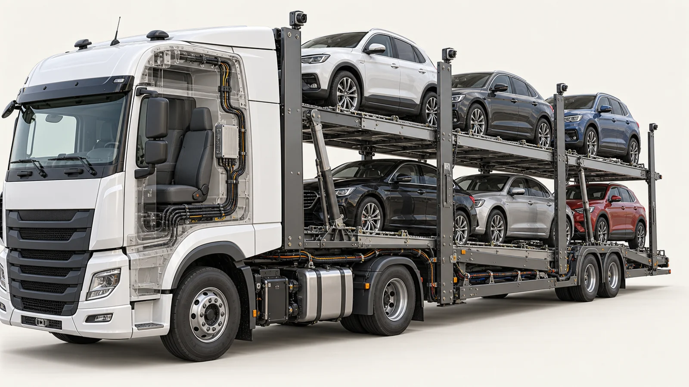

استكشف فكرة المنظومة
ناقلة سيارات دورين.
اعرف الأجهزة بتعمل إيه، وشوف تجربة تحميل الناقلة.
تجهيز المركبة…

الموديل ما ظهرش. تقدر تستكشف الأجهزة من القائمة.
استكشاف حراسحب للدوران · قرّب للتفاصيل
بنحمّل المشهد والموديلات والخامات…
بدء التحميل
اعرف الأجهزة بتعمل إيه، وشوف تجربة تحميل الناقلة.
تجهيز المركبة…

الموديل ما ظهرش. تقدر تستكشف الأجهزة من القائمة.